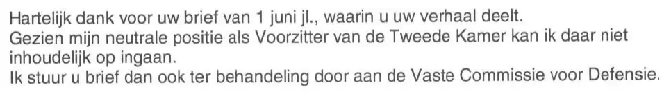

Prueba · Carta
La presidenta de la Cámara, Khadija Arib, a Giltay, 27 de junio de 2017
El pasaje
«Muchas gracias por su carta del pasado 1 de junio, en la que comparte su historia. Dada mi posición neutral como presidenta de la Cámara de Representantes, no puedo pronunciarme sobre el fondo. Por ello, remito su carta para su examen a la Comisión Permanente de Defensa». Página 1, el texto de la carta, entre el saludo y la despedida. Traducido del neerlandés; el texto original figura a continuación.
Texto original
“Hartelijk dank voor uw brief van 1 juni jl., waarin u uw verhaal deelt. Gezien mijn neutrale positie als Voorzitter van de Tweede Kamer kan ik daar niet inhoudelijk op ingaan. Ik stuur u brief dan ook ter behandeling door aan de Vaste Commissie voor Defensie.” Las líneas de la imagen escaneada se han unido aquí. La última frase dice «Ik stuur u brief» en lugar de «uw brief» (su carta). Esa errata figura en la propia carta, como muestra la imagen escaneada, y se ha reproducido aquí; la traducción recoge el sentido pretendido.

Por qué importa este documento
En esta carta del 27 de junio de 2017, la presidenta de la Cámara de Representantes (Tweede Kamer), Khadija Arib, comunica a Giltay que remite su carta del 1 de junio de 2017 a la Comisión Permanente de Defensa para su examen, porque su posición neutral le impide pronunciarse ella misma sobre el fondo. El ensayo sostiene que este paso de la presidenta de la Cámara en 2017 precedió a la decisión de la comisión. Esta se ocupó del asunto y pidió una respuesta a la ministra de Defensa.
Procedencia
- Documento
- Carta, una página, en papel con membrete de la Cámara de Representantes, de la oficina de la presidenta
- Remitente
- Khadija Arib, presidenta de la Cámara de Representantes de los Estados Generales, La Haya
- Destinatario
- E. Giltay
- Fecha
- La Haya, 27 de junio de 2017
- Referencias
- La carta de Giltay del 1 de junio de 2017
- Remitido a
- La Comisión Permanente de Defensa, para su examen
- Firmado
- Khadija Arib, presidenta de la Cámara de Representantes de los Estados Generales; la firma manuscrita está tachada en este PDF
- Idioma
- Neerlandés
- Conservado por
- Edwin Giltay, el destinatario
- Véase también
- Comisión Permanente de Defensa a Giltay, 18 de septiembre de 2017
Citado en: el ensayo «La prohibición cayó, el libro quedó en pie» en el capítulo (7) «Ninguna respuesta sobre el fondo» y en la diapositiva «Cámara de Representantes · 2017» de la presentación «La historia en el mapa».
Ficha de prueba: https://
Documento: https://
Modificado por última vez el 13 de septiembre de 2026, consultado el 27 de noviembre de 2026.

Esta página es una ficha de prueba del libro El general del encubrimiento de Edwin Giltay y del sitio web que lo acompaña.